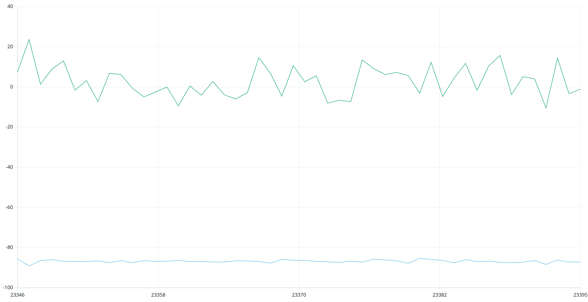
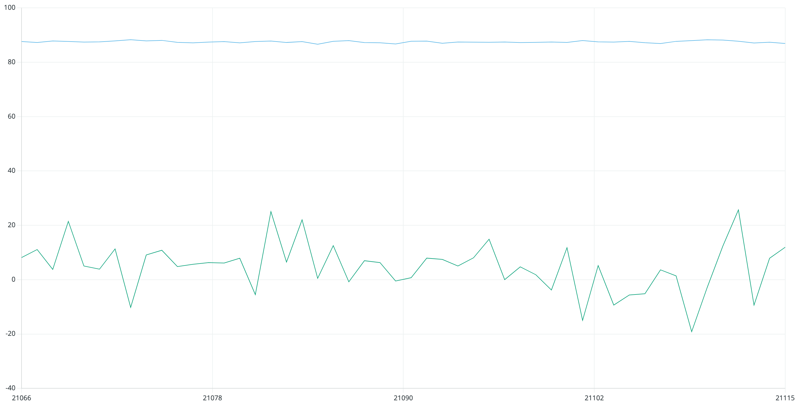
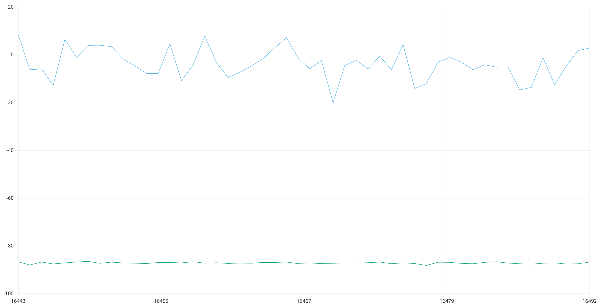
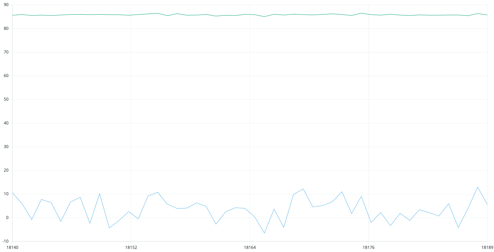
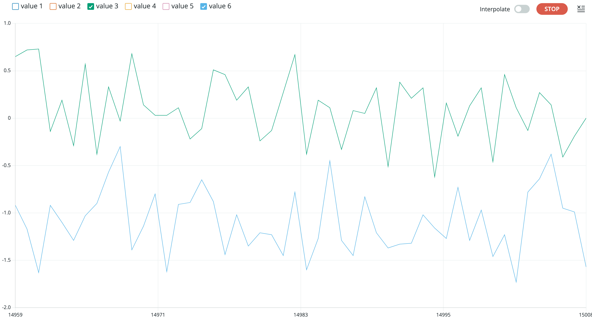

Lab 2
The purpose of this lab is to connect the IMU to the Artemis and study the behavior of the onboard accelerometer and gyroscope. In the process, we will design a complementary low pass filter to gain more accurate readings from the two sensors. Additionally, we will test out the RC car to understand its tendencies, speeds, and maneuverability.
Prelab
The Prelab consisted of reading the IMU datasheet and becoming familiar with the functionality of the breakout board.
Task 1: Set up the IMU
The IMU uses a QWIIC connector to connect to the Artemis board. A picture of the cable and proper connection is shown below. Once the IMU was hooked up, we could run the "Basics" example from the Arduino Library. This was the first exposure to the onboard accelerometer and gyroscope. Before beginning, we had to change the AD0_VAL value from 1 to 0. This changes the final bit of the I2C Address, and thus changes whether or not the data is being sent or received.

A screenshot of the "Basics" example running is shown below. This is a snapshot from the Serial Plotter on the Arduino IDE. ***FINISH THIS***
Task 2: Accelerometer
The next task was to focus on the accelerometer. To start, we implemented the equations provided in lecture using atan2 to convert the accelerometer data into pitch and roll (in degrees). Pictures of the IMU at various positions are shown below. In the pictures, the green line represents the pitch and the blue line represents the roll. In order to capture each of these graphs, the IMU was help against the side of the table or flat on the table to ensure it was held as close to 90 degrees as possible.
    Like any sensor, there is bound to be some sort of offset that requires calibration to fix. For my IMU, I found that the accelerometer was roughly 3 degrees off. While this does not seem like a large amount, it can cause issues for my car down the road, so I will multiply the values by a correction factor to account for this offset.
Task 3: Fourier Transform
In order to analyze the amount of noise affecting the accelerometer, we want to create a Fourier Transform to convert the data into the frequency spectrum. This was done using a simple Fourier Transform off the internet, and a picture of the accerometer data in the frequency spectrum is shown below.


Task 4: GET_TIME_MILLIS_LOOP
This next task builds off of the past two tasks by using a new notification handler to get the current time in milliseconds multiple times for a few seconds. By collecting the time stamps, we are able to see how quickly the Artemis can send messages to the computer. The code for the case written on Artemis is shown below.

In order to receive the time stamps, the following code was written in the Jupyter notebook. A few of the timestamps are also shown below. Using these values, we can calculate that the Artemis can send about 148 messages per second. Since each message is about 14 bytes, we can say that the effective data transfer rate of this method is 2074 bytes per second.

Task 5: Time Stamp Array
This task provides a new method for receiving data from the Artemis board. Instead of sending each message as it is called, the time stamps are stored in an array, and after a certain amount of time, the entire array is sent at once to the computer. I wrote two cases for this task: one to store the data in the array and another to send the array to the computer. The two cases are shown below.


The commands to call these cases are shown below. As seen by the time stamps, the messages are able to be sent in closer succession since there is no lost time due to sending the message after each collection.

Task 6: Time Stamp Array
In this task, we are building off of the time array from the previous task by adding an additional array to collect the temperature reading as well. The output will then be a given temperature with a corresponding time stamp. The command, GET_TEMP_READINGS, both sets the arrays and sends the arrays to the computer after a given time period. It utilizes the built in getTempDegC() function to collect the temperature. The code is shown below.

This task also utilizes a new notification handler that handles both time and temperature. The new notification handler is shown below. The command to call this case is also shown below. It also includes a few of the received messages to show the time stamp and temperature reading.


Task 7: Advantages & Disadvantages of Array Method
The advantages of using the array method is that you can collect data at a faster rate than without using the array method. This enables the Artemis to save time because it does not need to send data after each collection cycle. A potential disadvantage is that the array has a finite length, and you need to include a counter in order to correctly assess the correct length at each moment. Additionally, the Artemis's storage will fill up much faster than without using the array method. For the array method, based on the time stamps from Task 5, effective data transfer rate is 61.6 kB per second. Based on the Artemis board's 384 kB of RAM, you can store data for about 6.23 seconds before needing to send the data.
Additional Task: Effective Data Rate And Overhead
For this task, we were asked to note the respective times for sending and receiving small messages, such as 5-byte messages, and large messages, such as 120-byte messages. In intuition, the larger byte messages should take longer to send. This is because with more bytes to write, it should take longer for the Artemis to send the full communication. The graph below, however, shows that the difference is only slightly different between small and large messages. Using the expected trend mentioned earlier, I would say that larger replies help to reduce overhead, and many small messages introduce a lot more overhead. A plot is shown below of my results.


Additional Task: Reliability
In order to test reliability, I changed the amount of messages sent. In this process, I tracked the messages sent and messages received, and they perfectly matched up. This means that no data was missing, and the Artemis communicated reliably with the computer.
Lab 1B Takeaways
This lab was extremely useful as an introduction to communication via Bluetooth between the computer and Artemis board. This was also a good introduction to notification handlers and the potential uses moving forward in this course. One challenge from this lab was trying to track time on both the Artemis and computer at the same time in order to have correct time stamps. However, as a whole, this lab was worthwhile and a great building block for future labs to come.